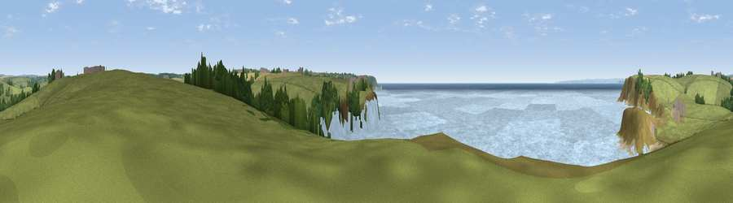

Viewpoint near Mullion
#16400 in England · top 43% of its area beats it · near Mullion · access?Where it is
The exact computed spot (SW 66275 20225). Click the marker for map links.
Public access: no public right of way or access land is recorded at this exact spot — it may be on private land. Computed from Natural England's CRoW access layer and OpenStreetMap rights of way — not the legal definitive map. Always verify locally.
The view, rendered

A 360° render of this exact spot computed from the terrain model, tree cover and land cover — summer colours, afternoon light, calibrated against photographs of famous viewpoints. Real trees, hedges and buildings will differ in detail.
The panorama
Grey silhouette: terrain skyline in each direction (720 bearings, Earth curvature and refraction included). Dashed green: skyline with trees (+15 m) and buildings (+8 m) as obstacles. Blue strip: how far the ground is visible on each bearing.
Where the view opens
Wedge length = distance to the farthest visible ground on that bearing (vegetation-aware). Rings at 10, 25 and 50 km.
What fills the view
64% water · 31% grassland · 2% woodland · 1% cropland ·
Angular shares of the visible panorama (visual magnitude), not map area. Landscape diversity 0.37 (0–1 Shannon).
Key numbers
More beautiful places nearby
The staircase of upgrades: each row has a higher view potential than everything closer. Driving times are estimates from straight-line distance, calibrated against real road routing — check an actual route before setting out.
| Place | Direction | Drive | Score |
|---|---|---|---|
| Viewpoint near Mullion | NW · 1 km | ~4 min | 66.0 |
| Viewpoint near Mullion | S · 4 km | ~9 min | 72.7 |
| Viewpoint near Ashton | NW · 11 km | ~21 min | 81.3 |
| Tregonning Hill | NW · 12 km | ~22 min | 83.0 |
| Rosewall Hill | NW · 26 km | ~42 min | 88.0 |
| Viewpoint near Combe Martin | NNE · 158 km | ~180 min | 88.9 |
| Holdstone Hill | NE · 159 km | ~181 min | 90.2 |
| The Knoll | ENE · 199 km | ~217 min | 91.0 |
50.03618, -5.26526 · source: screening · position refined by local search. Computed location — check access rights before visiting.